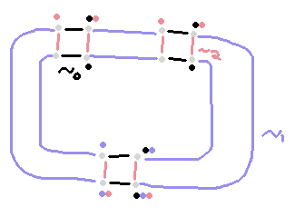
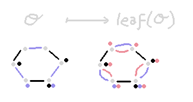
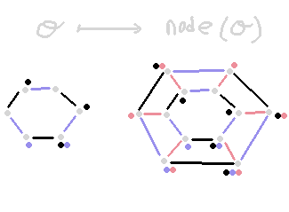
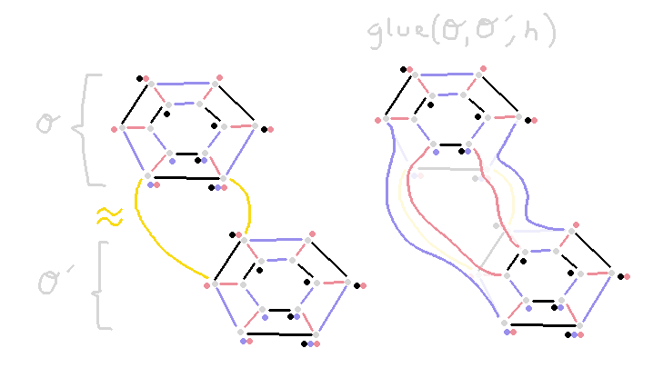
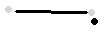
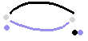
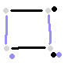
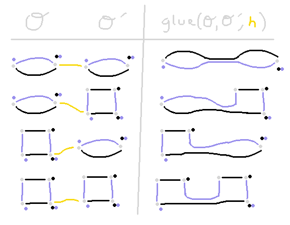
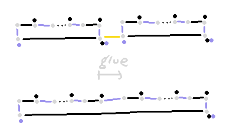

Thinking About Opetopes
Here's an idea that I found myself thinking about lately, which, if it works, might
be a nice simple discrete-geometric definition of opetope. I haven't gotten much
of the way into proving that it works, but it seems promising on small examples.
Preopetopes
Say an $n$-dimensional preopetope or
simply $n$-preopetope is a tuple \[\O = (X, C, \sim)\]
where $X$ is a set and $C = C_0, \ldots, C_n \subseteq X$ is a
family of $n+1$ unary relations on $X$, and ${\sim} = {\sim_0},
\ldots, {\sim_n} \subseteq X \x X$ is a family of $n+1$ binary
relations on $X$. Some intuitions motivating this data are:
- $X$ is a set of "flags"
(cf. this
post for some more discussion about that idea)
- $C_i$ tells us which of these
are in a "codomain" $i$-dimensional cell of the parent $(i+1)$-dimensional cell
- $\sim_i$ tells us which pairs of flags are related by "flipping to the other $i$-dimensional cell".
For example, $\sim_0$ relates flags that are related by "flipping to the other vertex (i.e. 0-cell) of an edge".
Depicting Preopetopes
We can draw a preopetope by drawing it as a graph with colored edges, with colored annotations
at the vertices. Here is an example 2-preopetope with twelve points, drawn as gray dots:

The edges of the graph represent $\sim_0$ (black) $\sim_1$ (light blue) and $\sim_2$ (red) holding
between flags of the carrier set. The small colored dots near the flags represent them belonging
to $C_0$ (black) $C_1$ (light blue) and/or $C_2$ (red).
Constructions on Preopetopes
Here are a few ways to make preopetopes.
Trivial
There is a trivial $(-1)$-preopetope $\btriv = (\{*\}, \cdot, \cdot)$
that has a one-element carrier set, and has no relations at all.
Leaf
Given an $n$-preopetope $\O = (X, \sim, C)$, we define an $(n+1)$-preopetope $\bleaf(\O) = (X', \sim', C')$ by
saying
\[X' = X \qquad C'_{i} = \begin{cases} X' & \hbox{if $i = n+1$}\\
C_i & \hbox{ otherwise.}\end{cases}
\qquad
{ x_1 \sim_i x_2 \over x_1 \sim'_i x_2} \qquad { x_1 \sim_n x_2 \over x_1 \sim'_{n+1} x_2}\]
What's going is that we are copying the (previously) top-dimension binary relation up
one dimension higher, and saying everything belongs to the new top-dimension unary relation.
For example:

We've duplicated every $\sim_1$ edge to become both a $\sim_1$ and a $\sim_2$ edge.
We've said every flag belongs to the $2$-codomain; all of them are marked with red dots.
Node
Given an $n$-preopetope $\O = (X, \sim, C)$, we define an $(n+1)$-preopetope $\bnode(\O) = (X', \sim', C')$ by saying
\[X' = 2 \x X \qquad C_i' = \begin{cases} \{(1,x) \in X' \} & \hbox{if $i = n+1$}\\
C_i & \hbox{ otherwise.}\end{cases}
\]\[
{ x_1 \sim_i x_2 \over (b, x_1) \sim'_i (b, x_2)}
\qquad { b_1 \ne b_2 \over (b_1, x) \sim'_{n+1} (b_2, x)}\]
What's going is that we take two copies of the entire flag set of $\O$, and join them along the
newly top-dimensional relation $\sim_{n+1}$. We say one copy belongs to the codomain $C_{n+1}$,
and the other one does not.
For example:

We've made two copies of the ring-shaped 1-preopetope and related them with $\sigma_2$.
We've said the outer copy belongs to $C_2$.
Glue
Suppose we're given two $n$-preopetopes $\O = (X,\sim,C)$ and $\O' = (X',\sim',C')$
Suppose there is a bijection $h : S \cong S'$ between some subsets
$S \subseteq X$ and $S' \subseteq X'$. Suppose that $h$ preserves the relations
$C_0,\ldots,C_{n-2}$ and $\sim_0,\ldots,\sim_{n-2}$, and symmetrically for $h^{-1}$. Write $s \approx s'$ for $h(s) = s'$.
Then we define an $n$-preopetope $\bglue(\O, \O', h) = (X'', \sim'', C'')$ by
\[X' = (X\setminus S) + (X' \setminus S') \qquad C''_i = C_i \cup C'_i\]
\[{x \sim_i y \over x \sim''_i y} \qquad {x' \sim'_i y' \over x' \sim''_i y'} \qquad
{x \sim_i s\qquad s \approx s' \qquad s' \sim'_i x' \over x \sim''_i x'}\]
Here's an example:

What happens is that we delete all of the flags in the domain and codomain of $h$,
and we "patch up" all of the binary relations as appropriate.
Defining Opetopes
We inductively define the conditions for an $n$-preopetope to be an $n$-opetope.
We say:
- $\btriv$ is an $(-1)$-opetope.
- If $\O$ is an $n$-opetope, then $\bleaf(\bnode(\O))$ is an $(n+2)$-opetope.
- If $\O$ is an $n$-opetope, then $\bnode(\O)$ is an $(n+1)$-opetope.
- If $\O = (X,\sim,C)$ and $\O' = (X',\sim',C')$ are $n$-opetopes for $n \ge 1$, and
we have a subset $S' \subseteq C'_n \setminus C'_{n-1} $,
and a bijection $h : (C_{n} \cap C_{n-1}) \cong S'$ preserving all relations up
to dimension $n-2$, then $\bglue(\O, \O', h)$ is an opetope.
Understanding Low-Dimensional Cases
(-1)-Opetopes
We can see immediately that $\btriv$ is the unique (-1)-opetope.
0-Opetopes
We can see that $\bnode(\btriv)$ is the unique (0)-opetope. It looks like this:

1-Opetopes
For 1-opetopes, we must consider leaves constructed from $(-1)$-opetopes, (of which there is one)
nodes constructed from $0$-opetopes, (of which there is one) and gluing different $1$-opetopes together.
The leaf case is $\bleaf(\bnode(\btriv))$. It looks like this:

Then we have $\bnode(\bnode(\btriv))$. It looks like this:

There are now 4 ways we can glue these two known $1$-opetopes together:

The first three rows of this table yield preopetopes we've already constructed,
but the fourth produces something novel. If we keep turning the crank, we
find that there is exactly one $1$-opetope $P_m$ for every natural number $m$, which has
$2m+2$ flags. Exactly half of its flags are in $C_0$, and exactly two of its flags are in $C_1$.
The leaf case was $m=0$ and the node case was $m=1$. The relations $\sim_0$ and $\sim_1$ are both
irreflexive and symmetric, and they relate every element of the flag set to exactly one other element.
We also find there is a unique way
to glue together $P_m$ and $P_{m'}$, which yields $P_{m+m'}$.

2-Opetopes
I'm going to be even less formal and more suggestive in this section.
2-opetopes correspond to planar trees.
The leaf case is the construction $\bleaf(\bnode(\bnode(\btriv)))$.
It looks like this: